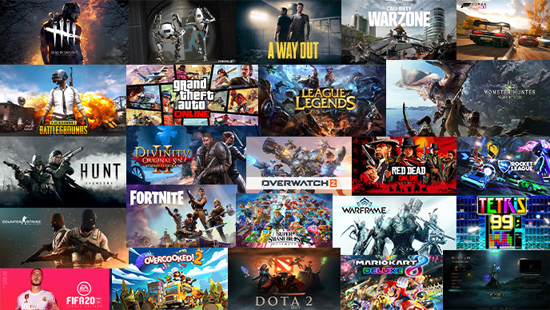

Jogos online
| Entre 10 e 12 anos descobri os jogos online, me apaixonei pelo mundo e até hoje não vivo sem eles, o primeiro que joguei foi o minecraft, jogava com uns amigos da escola ainda na época do fundamental 2. |

|
| Depois veio o lol, conheci esse jogo graças aos mesmos amigos do minecraft, que ja estavam saturados do jogos e procuravam algo novo | |
| Obviamente já joguei outros jogos, tantos que não consigo listar eles sem esquecer de alguns, porém, os dois anteriormente citados me marcaram muito, tanto que guardo lembranças deles até hoje. |  |